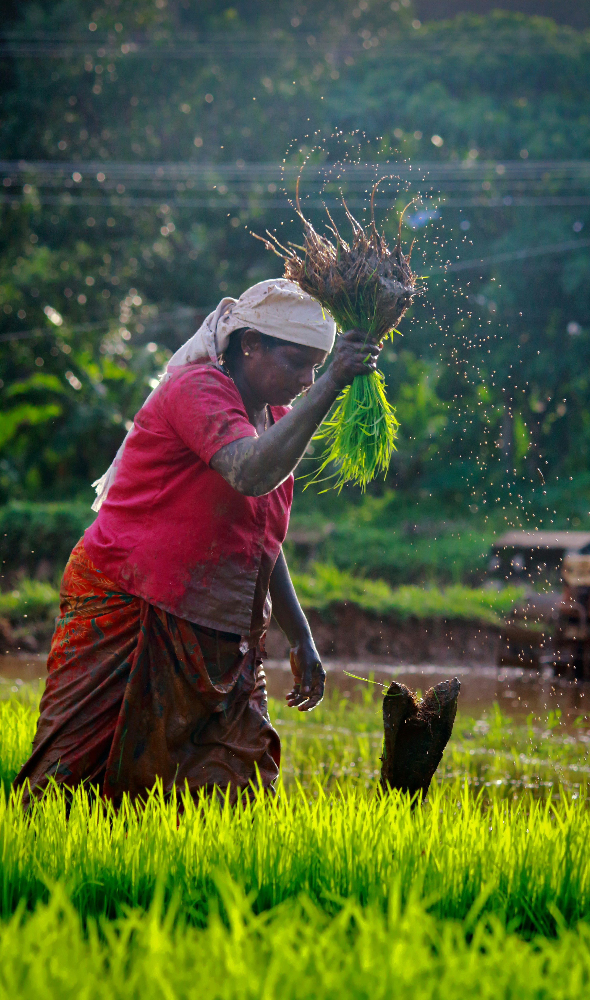
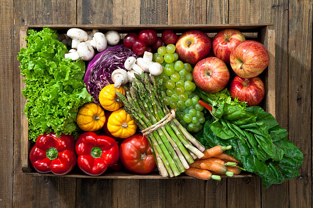

Good ingredients
We look for honest, thoughtfully sourced ingredients and products we'd be happy to put on our own tables.
We started Organic with a simple belief: better food begins with better choices — for our tables, our growers, and the earth we all share.

Organic began with a question: what if buying everyday groceries could feel a little more intentional?
We wanted to make it easier to find food that was thoughtfully grown, carefully selected, and genuinely worth bringing home.
So we built a grocery store around the things we care about most — honest ingredients, responsible farming, and relationships with the people behind our food.

Every carrot, grain, fruit, and pantry staple has a story behind it. That story matters.
We work with growers who care about healthy soil, thoughtful cultivation, and practices that respect the land. Whenever possible, we choose producers who share our belief that quality and responsibility belong together.
Because a grocery store should connect you to more than just what's on the shelf.
We keep our principles straightforward so that choosing what belongs in your kitchen can feel straightforward too.
We look for honest, thoughtfully sourced ingredients and products we'd be happy to put on our own tables.
Healthy soil and responsible farming practices matter because the future of food depends on the health of the land.
We value the farmers, makers, suppliers, and customers who make this little food community possible.
We don't need endless shelves of options. We'd rather offer a considered collection of things worth choosing.
“Good food doesn't have to be complicated. It just needs to be grown with care and chosen with intention.”
That's the idea behind everything we do.
Eating thoughtfully shouldn't mean making every meal an elaborate project.
That's why our collection is built around everyday staples alongside seasonal finds — the things you reach for when you're making breakfast, packing lunch, cooking dinner, or simply looking for something good to eat.
Shop our collection
Explore what's fresh, discover something new, and bring a little more intention to your everyday table.